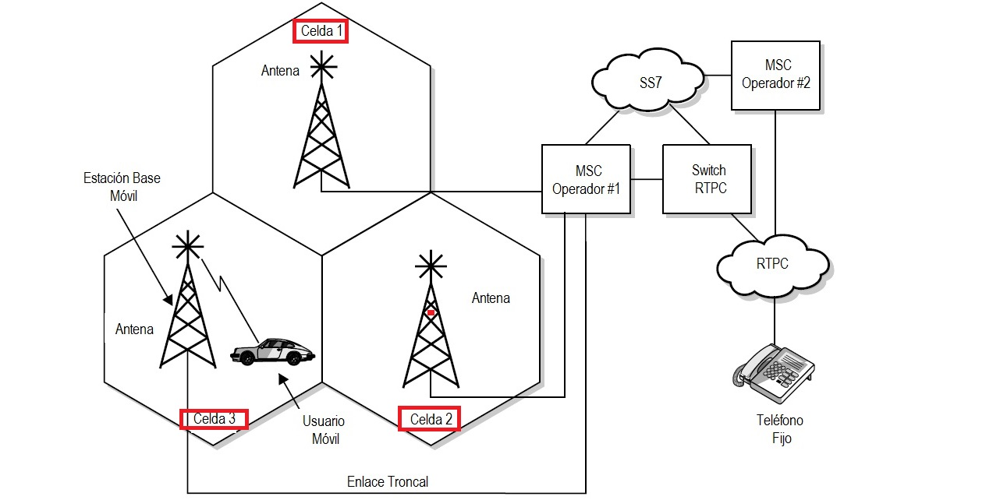

Archivos y Software
Archivos y Software
CAPITULO 3: PLANEACIÓN DE FRECUENCIAS
La celda o célula
Cada celda tiene una estación base que consiste en una torre y un pequeño edificio que contiene el equipo de radio. En cualquier celda, pueden hablar 56 personas en sus teléfonos celulares al mismo tiempo.

- Se subdivide una célula congestionada en otras más pequeñas
- Se necesita reducir la potencia de las nuevas células
- La división celular presenta el inconveniente de localizar nuevos emplazamientos
- Complica la asignación de canales
- Se suele llevar a cabo una vez realizada la sectorización
Tipos de celdas
- Se entiende como macrocélula aquella celda que proporciona cobertura con un alcance de algunos kilómetros; a saber: zonas rurales, zonas montañosas, autopistas, zonas residenciales suburbanas, zonas residenciales urbanas
- Las microcélulas son, células urbanas cubiertas por estaciones base con antenas transmisoras colocadas por debajo de las alturas medias de los edificios circundantes. El alcance es decir la (cobertura) suele ser inferior a 1 km.
- Picoceldas estas se logran al reducir mucho más el tamaño de las celdas, (cubrimiento menor a 100 metros).
- Una reducción en el tamaño de una celda implica un aumento en su capacidad (manejo de tráfico)
- Las picoceldas se utilizan para brindar cobertura en las zonas de muy alto tráfico, tales como centros de negocios.
Clúster
- Clusters es un conjunto o grupo de células.
- Se Agrupan la totalidad de las frecuencias disponibles por la red celular
- Ningún canal se vuelve a utilizar dentro de un cluster. Los clusters se agrupan en 4, 7, 12 o 21 celdas
REUTILIZACIÓN DE FRECUENCIAS
- Permiten reutilizar canales de frecuencia en distintas zonas geográficas y garantizar un nivel de interferencia adecuado
- Usuarios de diferentes clusters pueden usar simultáneamente el mismo canal
- Se la realiza debido al escaso espectro de frecuencias
CAPACIDAD DE UNA ÁREA GEOGRÁFICA
- La capacidad de un grupo de celdas está dada por: S = kN
- Si el grupo de celdas se repite M veces dentro de un área geográfica, entonces la capacidad total (C) de dicha área está dada por: C= MkN =MS
Ejemplo:
S=660
N=4
M=4
k=165
Entonces: C=2640
CANALES EN SISTEMAS AMPS/IS-136/IS-95
GEOMETRÍA CELULAR
- El área de cobertura de una BS es sin forma
- Al comienzo de los sistemas celulares: necesidad de utilizar una forma geométrica regular
- La elección inmediata (cobertura circular) no es válida: zonas de solapamiento
- El hexágono es el que tiene un área mayor: se necesitan menos BS para cubrir un terreno
PLANEACIÓN CELULAR
- Consiste en dividir una célula en un conjunto de sectores, cada uno con sus propias frecuencias, a cada sector se le asigna un subconjunto de frecuencias y se usan antenas direccionales en la base, para dar cobertura a cada sector.
- Se suelen dividir desde 3 a 6 sectores.
- La capacidad no se incrementa, pero se disminuye el nivel de interferencia en general
- Incremento en el reuso de frecuencias, aumentando el número mayor de usuarios.
Sectorización 120º
- Sólo 19 canales por sector (57/3)
- Cada sector soporta 11.2 Erlangs
- Cada celda A = 11.2 x 3 = 33.6 Erlangs
- 1008 llamadas por hora (24% menos respecto al caso omnidireccional)
Sectorización 60º
- Sólo hay 9 canales por sector.
- Cada sector soporta 3.78 Erlangs.
- Por cada celda A = 3.78 x 6 = 22.7 Erlangs
- 680 llamadas por hora (49% menos respecto al caso omnidireccional)
Área de localización
- El área de localización es aquella formada por un conjunto de células
- Determinan el área donde se encuentra el móvil y las células a través de las cuales se emitirá un mensaje de búsqueda para este móvil, en caso de llamadas entrantes al mismo
ANTENAS
- Ganancia
- Patrón de radiación
- Directividad
- Polarización
- Impedancia
- Efectos terrestres
- Ancho de banda
El patrón de radiación de una antena en una representación gráfica de las características de radiación de ella en función de la potencia, tanto en dirección horizontal como en dirección vertical, en sentido con el suelo
TIPOS DE ANTENAS
- Modo omnidireccional. La antena en este modo funciona exactamente igual que las antenas convencionales, es decir, emite señal con la misma intensidad hacia todas direcciones.
- Modo direccional. En este modo, la antena emite señal en una sola dirección y con un cierto ángulo de apertura. La consecuencia de transmitir en este modo se traduce en un mayor alcance hacia la dirección donde emite la antena debido a que ésta concentra todo su espectro de potencia en un rango de obertura mucho menor.
Tipos de antenas Inteligentes
- El sistema genera varios haces a ángulos prefijados que se van conmutando secuencialmente dando como resultado un barrido discreto de la zona de cobertura en posiciones angulares fijas.
- En cada posición discreta del haz se activa el sistema de recepción para detectar la posible existencia de señales.
- En este sistema, las salidas de cada elemento del arreglo de antenas se ponderan con un factor de peso cuyo valor se asigna dinámicamente para conformar un diagrama de radiación que presente el haz principal hacia la posición del usuario deseado y los haces o lóbulos secundarios hacia las direcciones de las componentes de multitrayecto de la señal deseada y mínimos o nulos de radiación en las direcciones de las fuentes de interferencia.
- Esta técnica requiere el uso de algoritmos (DoA) tanto para la detección de las señales de arribo e interferentes como para la optimización de los pesos que conforman el haz
Antenas Microstrip
La antena microstrip es una extensión de la línea de transmisión microstrip. Sus dimensiones se eligen de forma que el “parche” disipe la potencia en forma de radiación.
- Su rango de frecuencia podría variar desde los 300 MHz hasta los 50 GHz lo que le da una amplia capacidad de uso.
- Están basadas en la tecnología de circuito impreso con técnicas de fotograbado que crea estructuras sobre un dieléctrico, esto hace que las antenas puedan ser más compactas y sirvan para diferentes aplicaciones como la aviación, dispositivos móviles etc.
- Su tamaño reducido es muy ventajoso sin embargo esto tiene como costo no poder manejar mucha potencia como en el caso de otras antenas, además están hechas para rangos de frecuencia cortos.
- Consisten, básicamente, en un conjunto formado por una superficie metálica radiante frente a otra que actúa como plano de tierra y separadas por un espacio dieléctrico de espesor muy pequeño.
- El parche rectangular es el elemento más utilizado para la implementación, para el cual existe una manera efectiva de calcular sus dimensiones, tomando en cuenta que siempre va a ver un factor que afecte y varíe las mismas.
BIBLIOGRAFÍA
- F. Mendioroz, Telefonía Móvil Celula, 2015.
- P. Turmero, «monografias,» [En línea]. Available: https://www.monografias.com/trabajos103/telefonia-celular-sistema/telefonia-celular-sistema.shtml.
- C. G. GAIBOR, «uta.edu.ec,» [En línea]. Available: https://repositorio.uta.edu.ec/bitstream/123456789/395/3/Tesis_t139ec.pdf.
- W. Salazar, «repositorio.umsa.bo,» [En línea]. Available: https://repositorio.umsa.bo/xmlui/bitstream/handle/123456789/13487/PG-1904-Salazar%20Luna%2C%20Wilmer.pdf?sequence=1&isAllowed=y.
- J. &. A. L. ARGUELLO, Diseño e implementación de un prototipo de antena, Sangolqui, 2009.
- D. Boza, «slideshare,» [En línea]. Available: https://es.slideshare.net/marboza/deximarbozaact7
- F. Isai, «slideshare,» [En línea]. Available: https://es.slideshare.net/FranklinIsaiLeonhuacal/presentacion-propagacion-en-sistemas-celulares.
- C. Guital, E. Muñoz y N. Fierro, «Antenas inteligentes y su desempeño en redes wireless,» 2007. [En línea]. Available: http://revistas.uach.cl/pdf/sintec/v3n2/art05.pdf.
-
Plan de Frecuencias

-
La Celda o Celula
-
Tipos de Celdas
-
Macroceldas
-
Microceldas
-
Picoceldas
-
Comparaciones
-
Cluster
-
Reutilizacion de Frecuencias
-
Capacidad de una Area Geográfica
-
Canales en Sistemas AMPS/IS-136/IS-95
-
Geometria Celular
-
Planeacion Celular
-
Sectorizacion
-
Sectorizacion 120 grados
-
Sectorizacion 60 grados
-
Area de Localizacion
-
Antenas
-
Parametros de las Antenas
-
Patron de Radiacion
-
Tipos de Antenas
-
Antenas Inteligentes
-
Haz Conmutado (Switched Beam)
-
Haz Adaptativo
-
Antenas Microstrip
-
BIBLIOGRAFÍA